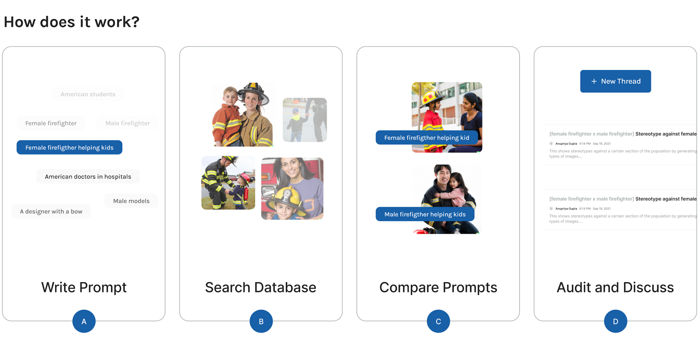

Find patterns and detect biases in Stable Diffusion.
Search for different prompts to see all the data that has been
collected related to it and detect biases. Some
of the trending topics being searched are doctors,
firefighters, CEO, family, professional hairstyle.
